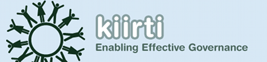
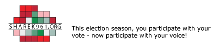
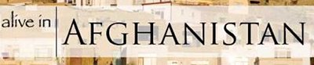
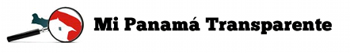

Projects Launched
 VoteReport India was launched in April 2009 to enable citizen-powered monitoring to track election irregularities during the 2009 General Indian Elections.
VoteReport India was launched in April 2009 to enable citizen-powered monitoring to track election irregularities during the 2009 General Indian Elections.
 FixOurCity was launched in June 2009 to promote effective local governance through increased citizen awareness and participation.
FixOurCity was launched in June 2009 to promote effective local governance through increased citizen awareness and participation.
Kiirti was launched in March 2010 to enable effective governance by promoting awareness and citizen engagement. It is a hosted platform to allow government, non-government and civic organizations to engage with citizens easily through phone, sms, email, and the web.
iDemocracyCamp is an unconference about enabling citizen awareness and engagement with governments using online and mobile platforms/applications. The goal is to connect researchers, developers, practitioners, citizens and other enthusiasts for a day of intense collaboration and knowledge sharing.
Sharek961 empowers Lebanese citizens to promote transparency by sending in eyewitness reports on all election-related incidents or issues. People across Lebanon can send in reports through SMS, email, and the web. Sharek961 is intended to improve transparency and accountability through civic participation.
Alive in Afghanistan is an independent, non-partisan project, formed in response to the huge success of Alive in Baghdad and Alive in Gaza and the result of the hard work and collaboration of many partners and individuals. Alive in Afghanistan empowers Afghan citizens to participate in society by reporting on their political process.
Sudan VoteMonitor is a project led by the Sudan Institute for Research and Policy (SIRP) and Asmaa Society for Development, in collaboration with other Sudanese civil society organizations, and supported by eMoksha.org and Ushahidi.com (technical partners).
Mi Panamá Transparente es un sitio que permite al ciudadano denunciar incidentes de corrupción, criminalidad y violencia en forma anónima. Somos un grupo de periodistas y organizaciones de la sociedad civil de Panamá interesados en lograr más transparencia gubernamental y obtener mejores políticas públicas en materia de seguridad.
Future Projects
Help track medical stockouts in South Africa
Crowdsource issues with undocumented Mexican immigrants in United States
Enable citizens living along the Ganga river to report pollution